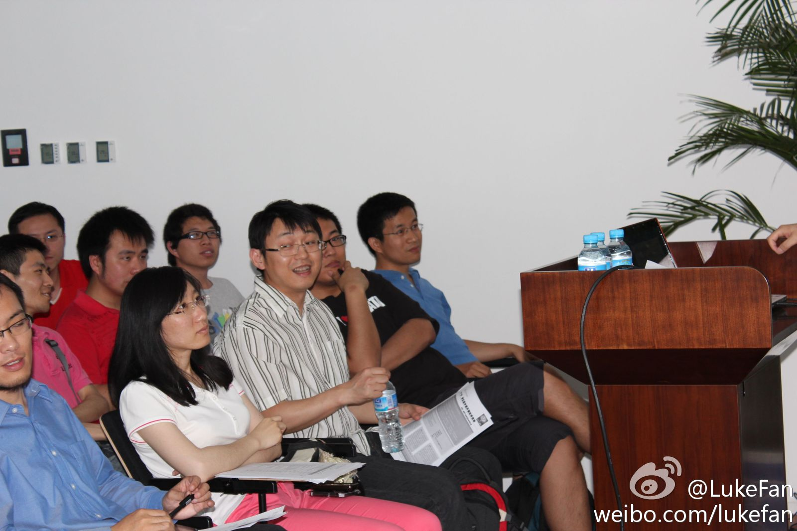

欣喜地发现，八卦之士遍神州。@大胃哥 抓拍得好。@LukeFan 点评得好。//@程开源: 女主角现身 //@睿-加油: 【声明】不像大家想的那样，我和姜宁05年就认识，我和他师出同门，他高我两届，图片瞬间取景，无上下文，勿揣测// 同求旁边美女的微博号//@jeffyuchang: 要么旁边的美女红了@姜宁willem 亮了@LukeFan:在#我们的开源项目#的活动中，大部分在认真听讲演，但是也有个别人的注意力过分的集中在了其他更美好的事物上。 